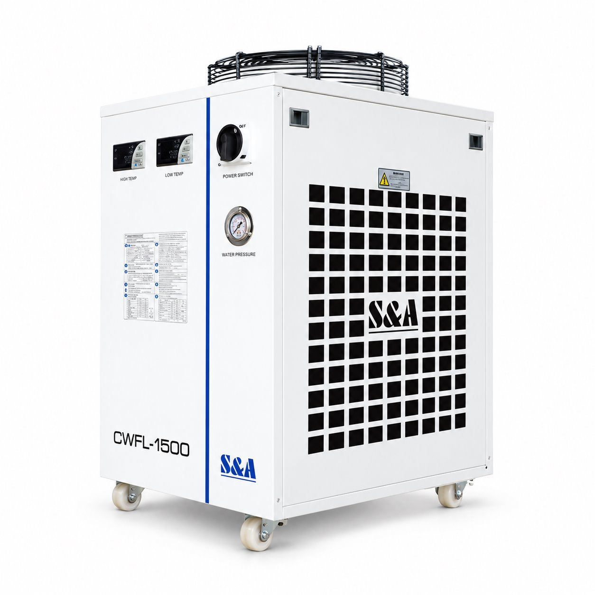

CC001
نام و هویت محصول از فهرست ثبتشدهٔ سهند لیزر نقل شده است. اطلاعات سازنده، گزینههای خانواده و تصویر مرجع به معنی تأیید موجودی یا پیکربندی نصبشده نیست.


Exterior reconstruction compared visually with supplied artwork: two displays, front switch and pressure gauge, right-side grille, blue stripe and upper fan agree. Generated labels are not technical evidence.
سند تطبیق
اطلاعات ثبتشده و دامنهٔ آن
| برند | TEYU S&A دامنهٔ ثبت: identity · منبع |
|---|---|
| مدل / خانواده | CWFL-1500 دامنهٔ ثبت: identity · منبع |
| ساختار خنککاری سری | دو مدار مستقل برای سورس و هد دامنهٔ ثبت: manufacturer_web · منبع |
| کاربری معرفیشده سازنده | سامانههای فایبر تا 1.5 kW؛ انتخاب نهایی با نیاز سرمایشی دستگاه دامنهٔ ثبت: manufacturer_web · منبع |
| پایداری دمای نسخه صفحه مرجع | ±0.5 °C دامنهٔ ثبت: manufacturer_web · منبع |
| مشخصات نصب نسخه صفحه مرجع | 70 × 47 × 89 cm؛ طول × عرض × ارتفاع دامنهٔ ثبت: manufacturer_web · منبع |
| حجم مخزن نسخه صفحه مرجع | 15 L؛ این مقدار به تمام پسوندها تعمیم داده نمیشود دامنهٔ ثبت: manufacturer_web · منبع |
اطلاعات سازنده؛ مستقل از دستگاه نصبشده
سازنده در صفحهٔ CWFL-1500 دو مدار مستقل برای سورس فایبر و هد معرفی میکند. این توضیح مربوط به نسخهٔ صفحهٔ سازنده است؛ بهتنهایی تجهیزات نصبشده روی دستگاه سهند را تعیین نمیکند. منبع سازنده
منابع رکورد
- سند هویت و تطبیق رکورد
- TEYU CWFL-1500 reference page; exact supplied unit suffix not identified — manufacturer_web_variant